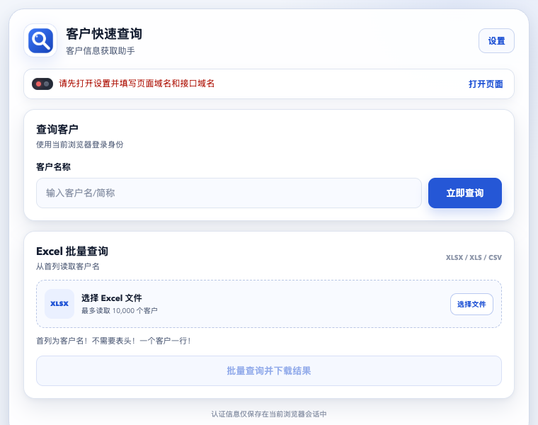
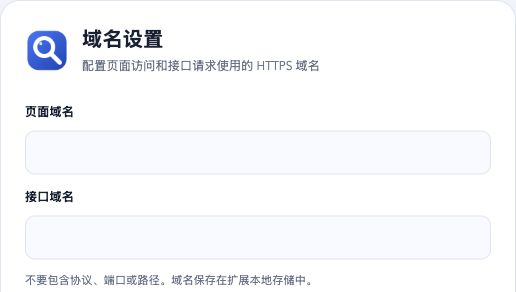

用于打开并保持登录的客户页面
由使用者提供

第一次只需设置一次
先解压 ZIP，再让 Chrome 选择解压后的文件夹。不要直接选择 ZIP，也不要选到文件夹的上一层。
下载 quick-search-extension.zip，右键选择“解压”或“双击解压”，把得到的文件夹放在不会随意删除的位置。
不要这样做：不要在 ZIP 压缩包里直接打开文件，也不要加载 ZIP 文件本身。
复制 chrome://extensions/，粘贴到 Chrome 地址栏并按回车。这个地址不能像普通网页链接一样直接点击打开。
在扩展管理页右上角打开“开发者模式”开关。开启后，页面左上方会出现“加载已解压的扩展程序”按钮。
点击“加载已解压的扩展程序”，在文件选择窗口中选中刚才解压出的文件夹，然后点击“选择文件夹”。
选对的标志：打开该文件夹后，第一层就能看到 manifest.json、popup.html 等文件。如果只看到另一个同名文件夹，请再进入一层。
扩展管理页出现“客户快速查询”卡片即表示加载成功。再点击地址栏右侧的扩展菜单，找到“客户快速查询”并点击图钉，之后可直接从工具栏打开。
安装后马上完成
点击扩展右上角的“设置”，把下面两个域名分别复制到对应输入框。只填域名本身，不要填写 https://、端口或斜杠后的路径。

用于打开并保持登录的客户页面
由使用者提供
用于发送客户查询请求
由使用者提供
host.example.comhttps://host.example.com/path点击“保存并生效”，Chrome 会弹出对这两个 HTTPS 域名的访问授权。
点击“允许”。看到“设置已保存并生效”，说明配置完成。
重新打开扩展并点击“打开页面”，完成登录并保持该标签页打开；状态变成绿灯后即可查询。
首次使用先登录目标页面，之后只需输入客户名称。
点击扩展中的“打开页面”，按正常流程完成登录。
输入完整或部分名称，例如“伯乐”，然后点击“立即查询”。
结果会直接显示在扩展中，需要时可一键复制。
首列直接放客户名，不需要表头。选择文件后扩展会依次查询并下载结果。
扩展使用当前浏览器会话完成查询，不要求用户复制 Cookie 或 Token。域名配置保存在 Chrome 扩展本地存储中。
遇到问题时，通常只需刷新目标页面或重新加载扩展。
点击“打开页面”，完成登录并等待客户页面加载，然后再次打开扩展。
当前登录态可能已过期。刷新目标页面，必要时重新登录即可。
扩展不内置任何域名默认值。首次使用时，需要手动填写“页面域名”和“接口域名”并保存。
扩展只有获得用户授权后才能访问填写的 HTTPS 域名。每次配置新域名时，Chrome 都可能请求确认。
修改域名时会主动清除旧的会话认证信息。请点击“打开页面”，完成登录或刷新页面后再次查询。
不需要。首列直接填写客户名，一个客户一行。
打开 Chrome 扩展管理页，在客户快速查询卡片上点击刷新按钮。
下载扩展包，按本页步骤安装即可使用。